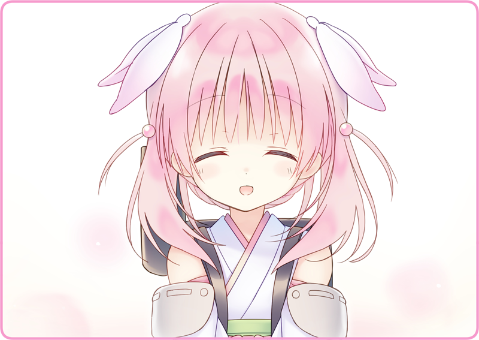

ペンダントライトのフィラメントが、何度か明滅する。
窓辺に立って外を眺める。すっかり日が沈んでおり、街を行く人手もない。黒猫亭の柔らかな光が、ステンドガラスを通じて夜闇に溶け出していくようだ。灯火管制はとっくの昔に終わっているが、人々はその頃の名残を残しており、皆早々に自宅の電灯を消してしまう。外灯もまばらで、頼りになるのは月明かりだけという有様だ。
ボクは調度品にはたきをかけて、落ちた埃を丁寧に拭き取った。特にレコードプレイヤーは静電気を蓄えているせいか、汚れが付着しやすい。今日も店内のムード作りに一役買ってくれたことだし、その労をねぎらってやらないといけない。
一段落したところで背筋を伸ばす。ふと隣を見ると、木目を美しく輝かせているアップライトピアノが目に入る。なんとなしにカバーを上げ、鍵盤を覗かせる。そっと指を落とすと、肌寒い夜を思わせる硬質な音が響いた。前の勤め先では、奥様がよく弾いていたっけ。なんていう曲だったか聞きそびれてしまった。確かローベリアの曲で、戦時中は弾くのがはばかられていたとか、そんなことを言っていた気がする……。
ぶっきらぼうな声。月下がモップを洗っている。
「ごめん、サボってるわけじゃないんだけど……」
いつも通りの無表情。黙々と後片付けをしている。
「ねえ、月下はピアノ弾けたりしない？」
「それもそうか……誰か弾けるかな？」
「鴉羽さんと話していたんだよ」
ピアノを活用し、お店に新しい客を呼び込む。なんだったら、自律人形がちょっとしたショーをしても面白い。鴉羽に話したことを繰り返した。
「そうだけど、実際に演奏して、歌を送ると違うものだよ」
月下はじっとボクを見つめた。
それは素朴な疑問のようで、解き明かせない不思議を尋ねているような、そんな言葉だった。
おとめ「月下、掃除は終わったか？」
二階から降りてくるのは、オーナーの奥宮さんだ。
おとめ「時間通りだな」
「すみません、こっちはまだ終わっていなくて……」
おとめ「なに、まだ慣れていないだろうしな。月下、鴉羽の仕事を手伝ってやってくれ」
鴉羽さんはこの時間、帳簿や仕入れの監理をしている。月下は背筋を伸ばして、軽く靴底を鳴らすと、モップとバケツを持ってフロアを去っていた。
「あの、奥宮少佐」
おとめ「少佐は止めないか」
「すみません、癖で……ピアノを弾けるお知り合いはいますか？」
おとめ「わたしは心得があるが」
「ええっ！？」
おとめ「なんだ、その驚きようは」
「いえ、失礼しました。奥宮さんがピアノ……」
すらりとした手足。広い肩幅。軍人だった頃はさぞかし絵になっただろう。軍隊は男社会ではあるが、それでも奥宮さんであれば一目置かれたことだろう。張りのある声で一喝すれば、たちまち兵士達の間に緊張が走ったことは想像に難くない。
「……意外とお嬢様だったんですね」
おとめ「ニヤニヤするな」
「そ、そんなわけでは」
慌てて顔を引き締める。
奥宮さんは視線を背けて、少々気まずそうにしていた。
おとめ「私にだって、花も恥じらう乙女だった頃があるのだ」
ぷいと顔を背けると、月下の後を追っていた。
機会を伺ってその腕前を見せてもらおう。密かにそう心に決めていた。
からんころんとドアベルを鳴らして、灰桜が帰ってくる。
「野良犬がうろついていなかった？」
「やっぱり……」
「ほんとに？」
灰桜の言葉が通じたのだろうか……。
大方、匂いで残飯が無いことを察したのだろうけど。
「なんとなく、格好だけね。せっかくあるものだから」
ぽろぽろと鍵盤を叩く。
「そう？」
「灰桜は音楽が好きなんだね」
「じゃあ、さ」
最後の白鍵を弾く。
澄んだ音色が、フロアに響いていた。
「なにか、歌ってみれば？」
それは意外な言葉だったようで、きょとんとしている。
続いて、なにか考え込むような仕草。
そして、じっと瑠璃色の目でボクを見て、そう明瞭に告げた。
「……壊れているから」
「だったら、伴奏なしで歌えばいいんじゃないかな」
つまるところ、ものすごく音痴ということだろうか。
「それって、修理できないのかな？」
ふるふると首を横に振る。桜色の髪の毛も、一緒に揺れた。
「記憶喪失？」
ぴょん、と飛んで指差している。
灰桜は悲しさを感じさせないけど、それが余計に胸を締め付けられた。
「記憶喪失は治ることがあるよ」
「だから……灰桜も直るんじゃないかな」
「一緒に見つけようよ、灰桜の生まれた理由をさ」
ボクは小さな
自律人形に、そう持ちかけた。
「聞きたいな、灰桜の歌を」
彼女は目を丸くして、すこし驚いて、でも変わらない笑顔で……。

にっこりとそう頷いてくれた。


 「床掃除、終わりました」
「床掃除、終わりました」 「お外の掃き掃除、しゅーりょーしました！」
「お外の掃き掃除、しゅーりょーしました！」